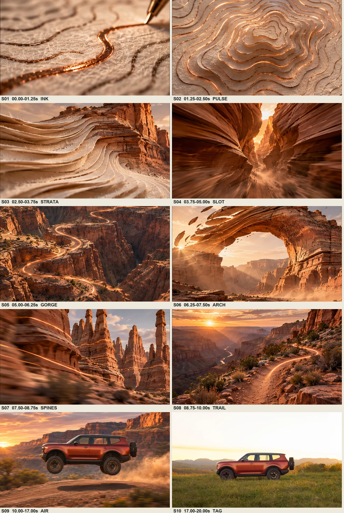
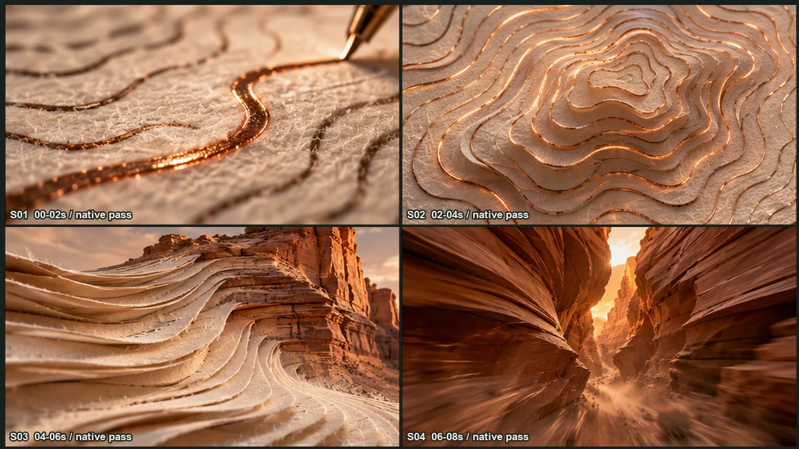
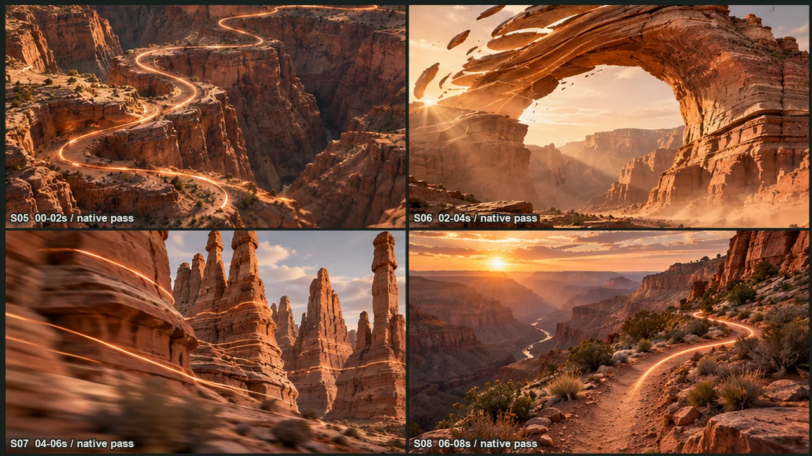
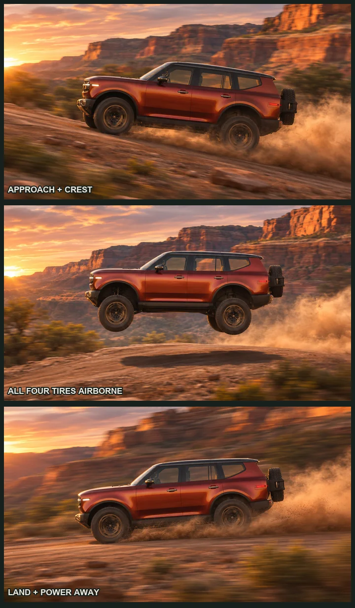
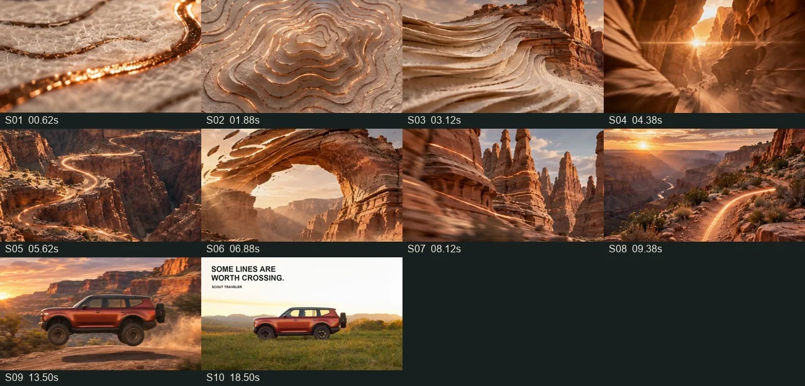
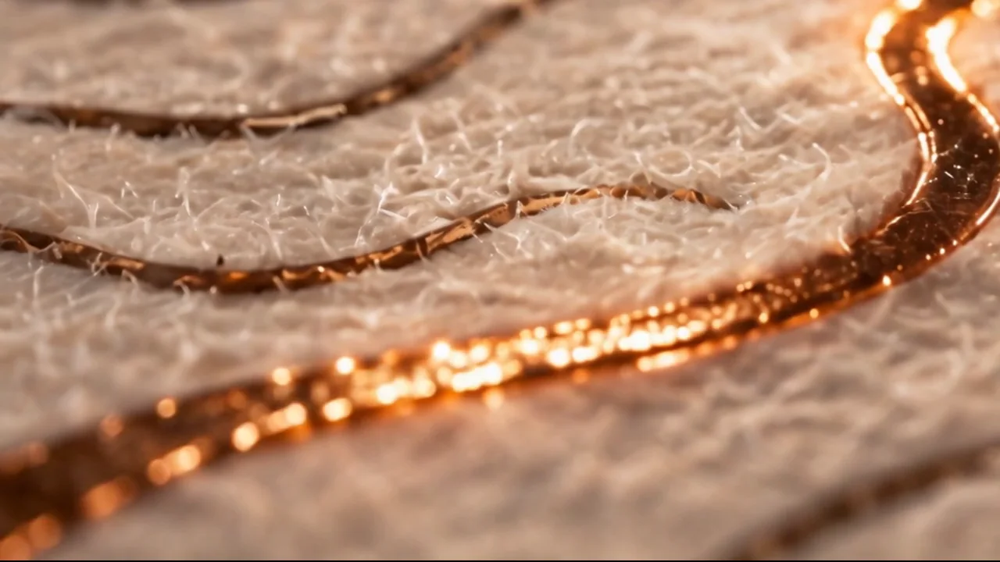
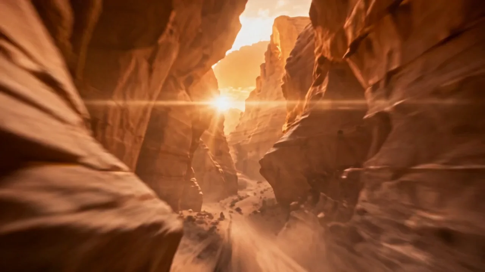

Scout Traveler
A contour line becomes a landscape. A landscape becomes a reason to go.
- Role
- Creative direction / design / AI motion
- Year
- 2026
- Scope
- Independent concept film
The line becomes the land.
A fine copper contour travels over an ivory map, then grows into paper relief, sandstone and a trail. The changing scale turns a small mark into an invitation to move through a much larger place.
The warm copper and ivory palette keeps the transformation tactile and legible, while map-like detail gives the landscape a sense of direction.

A map at one scale. A road at another.
This tall board is a development study for sequence and mood; it is not a frame from the film. It helped set the route from drawn contour to physical terrain before the final edit was assembled.




Twenty seconds, three movements.
Eight quick opening shots let the idea change shape before a single action passage carries it into the photographed end tag.
- Eight shots
Copper line, rising relief, paper strata and canyon; the path resolves into a trail.
- Traveler in motion
Acceleration, crest, brief airborne beat, landing and departure in one continuous action shot.
- Original-photo tag
The authentic profile photograph closes on “SOME LINES ARE / WORTH CROSSING.”




Let the image change. Keep the idea clear.
Three independent generation passes separated the eight-shot landscape introduction from the continuous vehicle action. The boards set shot order and visual direction; original product photography held authority for the vehicle and its closing silhouette.
Frame-exact editorial trims and crops removed an unintended pen from one generated opening take and reference labels from another. Type was added in post, and a new instrumental track generated with Studio’s music tools was fitted to the edit; the film then returns to the authentic profile photograph for its final three seconds.
Read the prompt approach
Three independent Seedance passes: two eight-second introductions built from four distinct hard-cut landscape shots each, followed by one continuous eight-second action shot. Copper contour line becomes relief, sandstone, canyon and trail; a referenced Traveler moves across the trail. Boards guide shot order only. No generated text, logos, people, hands, pens or tools. The jump is described as speculative cinematic action, and generated form remains approximate.
SOME LINES ARE
Final film endline
WORTH CROSSING.
Independent concept film. Not commissioned or endorsed by Scout. Product motion is speculative; generated vehicle form is approximate.